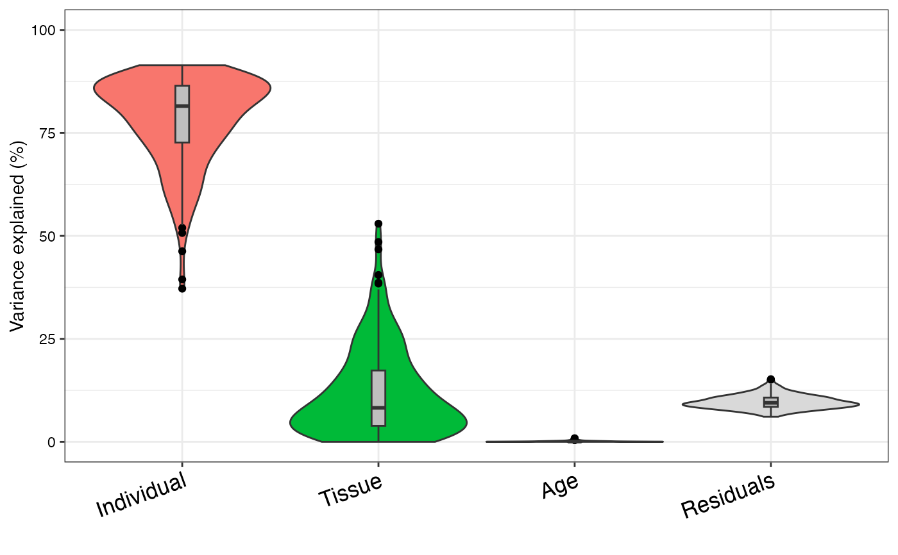

extractVarPart(modelList, showWarnings = TRUE, ...)
| modelList | list of |
|---|---|
| showWarnings | show warnings about model fit (default TRUE) |
| ... | other arguments |
data.frame of fraction of variance explained by each variable, after correcting for all others.
# library(variancePartition) # Intialize parallel backend with 4 cores library(BiocParallel) register(SnowParam(4)) # load simulated data: # geneExpr: matrix of gene expression values # info: information/metadata about each sample data(varPartData) # Specify variables to consider # Age is continuous so we model it as a fixed effect # Individual and Tissue are both categorical, so we model them as random effects form <- ~ Age + (1|Individual) + (1|Tissue) # Step 1: fit linear mixed model on gene expresson # If categoritical variables are specified, a linear mixed model is used # If all variables are modeled as continuous, a linear model is used # each entry in results is a regression model fit on a single gene # Step 2: extract variance fractions from each model fit # for each gene, returns fraction of variation attributable to each variable # Interpretation: the variance explained by each variable # after correction for all other variables varPart <- fitExtractVarPartModel( geneExpr, form, info )#>#> #># Advanced: # Fit model and extract variance in two separate steps # Step 1: fit model for each gene, store model fit for each gene in a list results <- fitVarPartModel( geneExpr, form, info )#>#>#> #># Step 2: extract variance fractions varPart <- extractVarPart( results )